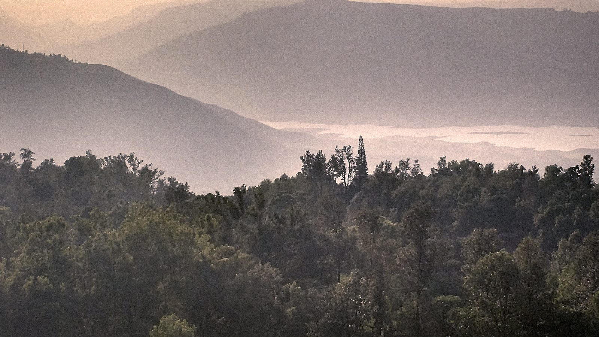
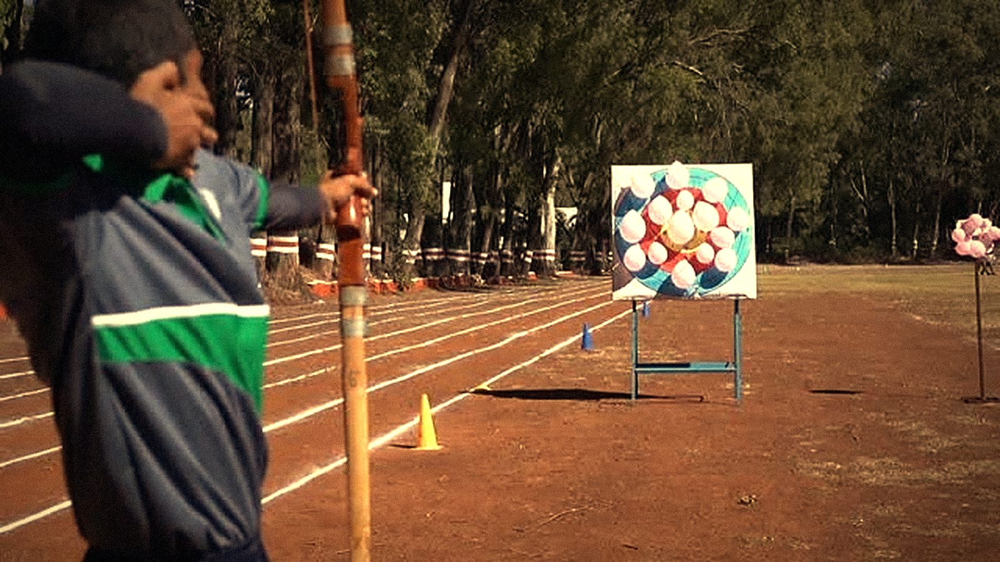
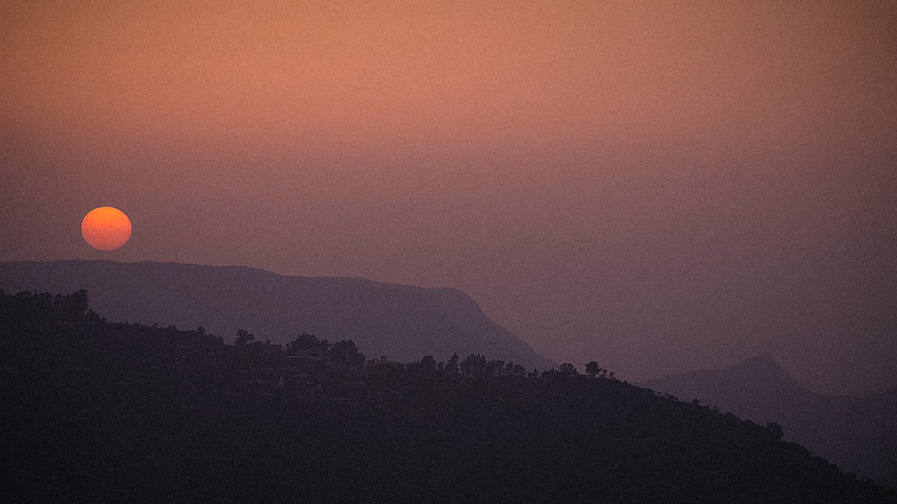

Five prayers divide every day at Anjuman into five chapters. Look at the clock: the five marks on its ring are Fajr, Dhuhr, Asr, Maghrib and Isha. Keep scrolling and the hand will walk you through each one.
The first voice they hear is not an alarm. It’s the adhan.
Mist sits in the valley below. Boys and girls rise in the hostels, make wudu and stand shoulder to shoulder in jama‘ah. Then the Qur’an, recited and understood. By the time the city wakes up, your child has already won the day.
Wake · wudu · Fajr in jama‘ah
Qur’an recitation
Morning PT on the grounds
Breakfast, together
Will my child feel lonely?
Not at 5:15 a.m., standing in a row of friends who’ll become brothers and sisters for life. Loneliness lives on screens. Here, the day begins in congregation.

Fajr · the valley still asleep
08:00 – 13:15 · Full light
الظهرDhuhr
Mornings belong to the mind.
English-medium classes from Primary to Std XII. Robotics kits on the bench, a microscope by the window, a library that smells like a library. For Junior College students, NEET, JEE, MHT-CET and NATA coaching is built into the timetable: no city coaching class, no wasted commute.
Assembly · then classes
AI & Robotics lab
Science labs · computer lab
Dhuhr · lunch
Dhuhr · between classes
NEETJEEMHT-CETNATACADigital classrooms
Will a hill-station school keep up with city schools?
Fewer distractions is not less ambition. It’s more hours of real focus, in air that doesn’t tire the mind.
16:00 – 18:00 · Golden hour
العصرAsr
Afternoons belong to the body and the soul.
After Asr, 174 acres open up. Hooves on red earth. The thwack of an arrow finding its mark. Clay spinning on a wheel. A stage being set for Friday’s play. This is the hour children discover who they are.
Horse ridingArcheryShooting rangePotteryBasic aviationAgricultureSkating rinkCricket · football · hockeyDebateTheatre
Will they become all books and no life?
The opposite. Ask any old boy what he remembers of Panchgani. He’ll tell you about the horses before he tells you about the exams.

Asr · the archery range
18:15 · The sun sets over the valley
المغربMaghrib
The sky turns rose. The table is set. No one eats alone.
Maghrib in the prayer hall, then dinner: nutritious, home-style, eaten together. Evening study follows with peer tutors and resident advisors on hand, so homework never becomes a lonely struggle. Everything is taken care of, so your child can take care of what matters.
Maghrib in the prayer hall
Dinner in the dining hall
Supervised evening prep

Maghrib · the sun drops behind the ridge
Will they eat properly?
Five meals a day, on a menu designed by a dietician, in a renovated 300-seat dining hall, with the kitchen supervised throughout. Hygiene and cleanliness come first.
20:30 · Stars over the Table Land
العشاءIsha
The last prayer. The quietest hour. The safest place.
Isha, a few minutes of reflection, a short talk from a teacher, and then the hostels go quiet. Hostels for boys and girls, with a dorm in-charge who gives guidance and a listening ear. A trained nurse on campus 24/7, a sick bay, and regular doctor visits. On clear nights the telescopes come out: there is no city glow to hide the stars here.
Isha in jama‘ah
Reflection · reading · sky gazing on clear nights
Lights out
On-site nurse · pastoral care
Lights out at ten.A dorm in-charge on hand.A nurse awake all night.Now you can sleep too.
اللَّهُمَّ بِاسْمِكَ أَمُوتُ وَأَحْيَا
Allāhumma bismika amūtu wa aḥyā
“O Allah, in Your name I die and I live.” A bedtime dua from the Sunnah.
The 2 a.m. ledger
The questions every parent asks when the house is quiet.
We wrote them down: the ones you’d never ask at an admissions desk. Here are honest answers.
01Am I a bad parent for sending them away?+
You’re not sending them away. You’re sending them up, to a place built to do what no city apartment can: clean air, real friends, a day ordered by salah, and adults whose whole job is to raise them well. Most parents tell us the guilt lasts a month. The gratitude lasts a lifetime.
02Will they forget their deen in a modern school?+
Here the deen isn’t a period on the timetable. It is the timetable. The adhan is called five times a day in the prayer hall, Qur’an recitation and Islamic education are emphasised, Hifz is available on request, and akhlaq is modelled by teachers every hour of the day.
03What if they fall sick?+
A trained nurse is on campus around the clock, a doctor visits for regular check-ups, and the sick bay can keep a child in-house for rest and care.
04Is it safe for my daughter?+
The dormitories have been fully renovated, a dorm in-charge looks after every child, the administrative staff keep the campus safe and secure, and a trained nurse is on campus 24/7. Ask us anything on your visit, and ask to see it yourself.
05Will they still crack NEET or JEE?+
Entrance coaching for NEET, JEE, MHT-CET and NATA is integrated into Junior College. No commute, no second shift in a coaching centre: the hours saved go back into study and sleep.
06Will they come back to me different?+
Yes. More confident, more independent, more grateful. They’ll make their own bed in the holidays. You may need a moment.
Admissions 2027–28 · Primary to XII
Don’t take our word. Take one day.
Choose a prayer, and arrive in time for it. Pray with our students, eat at their table, walk their day. Most families who choose Anjuman Panchgani make the decision somewhere between Asr and Maghrib, on this campus.